In this document we discuss the solution of time-harmonic acoustic fluid-structure interaction problems in cylindrical polar coordinates, using a Fourier decomposition of the solution in the azimuthal direction. These equations are useful to solve problems involving axisymmetric elastic bodies.
We start by reviewing the relevant theory and then present the solution of a simple model problem – the sound radiation from an oscillating sphere that is coated with a compressible elastic layer.
This problem combines the problems discussed in the tutorials illustrating
and
[Note that this tutorial is (obviously) very similar to its cartesian counterpart. The considerable overlap of material is deliberate to make both tutorials reasonably self-contained and explicit.]
Theory: Time-harmonic acoustic fluid-structure interaction problems in cylindrical polar coordinates
The figure below shows a sketch of a representative model problem: a sphere is immersed in an inviscid compressible fluid and performs a prescribed harmonic oscillation of radian frequency  . The sphere is coated with a compressible elastic layer. We wish to compute the displacement field in the elastic coating (assumed to be described by the equations of time-harmonic linear elasticity) and the pressure distribution in the fluid (governed by the Helmholtz equation). The two sets of equations interact at the interface between fluid and solid: the fluid pressure exerts a traction onto the elastic layer, while the motion of the elastic layer drives the fluid motion via the non-penetration condition.
. The sphere is coated with a compressible elastic layer. We wish to compute the displacement field in the elastic coating (assumed to be described by the equations of time-harmonic linear elasticity) and the pressure distribution in the fluid (governed by the Helmholtz equation). The two sets of equations interact at the interface between fluid and solid: the fluid pressure exerts a traction onto the elastic layer, while the motion of the elastic layer drives the fluid motion via the non-penetration condition.

The fluid model: the Helmholtz equation
We describe the behaviour of the fluid in terms of the displacement field, 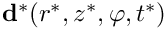, of the fluid particles, where 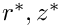 and  are cylindrical polar coordinates. As usual, we use asterisks to distinguish dimensional quantities from their non-dimensional equivalents. The fluid is inviscid and compressible, with a bulk modulus
are cylindrical polar coordinates. As usual, we use asterisks to distinguish dimensional quantities from their non-dimensional equivalents. The fluid is inviscid and compressible, with a bulk modulus  , such that the acoustic pressure is given by 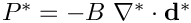 We assume that the fluid motion is irrotational and can be described by a displacement potential 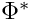, such that
, such that the acoustic pressure is given by 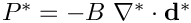 We assume that the fluid motion is irrotational and can be described by a displacement potential 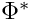, such that  We consider steady-state time-harmonic oscillations and write the displacement potential and the pressure as 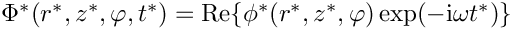 and 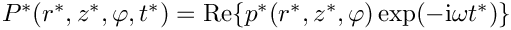, respectively, where 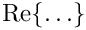 denotes the real part. For small disturbances, the linearised Euler equation reveals that the time-harmonic pressure is related to the displacement potential via 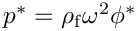 where 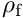 is the ambient fluid density. We non-dimensionalise all lengths on a problem-specific lengthscale
We consider steady-state time-harmonic oscillations and write the displacement potential and the pressure as 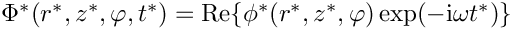 and 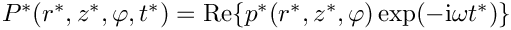, respectively, where 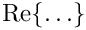 denotes the real part. For small disturbances, the linearised Euler equation reveals that the time-harmonic pressure is related to the displacement potential via 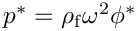 where 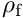 is the ambient fluid density. We non-dimensionalise all lengths on a problem-specific lengthscale  (e.g. the outer radius of the coating layer) such that 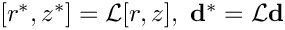 and 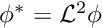.
(e.g. the outer radius of the coating layer) such that 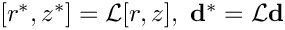 and 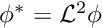.
We then decompose  into its Fourier components by writing
into its Fourier components by writing
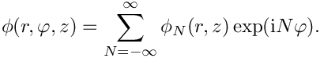
Since the governing equations are linear we can compute each Fourier component 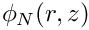 individually by solving
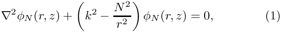
where the square of the non-dimensional wavenumber,
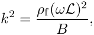
represents the ratio of the typical inertial fluid pressure induced by the wall oscillation to the ‘stiffness’ of the fluid.
The solid model: the time harmonic equations of linear elasticity
We model the coating layer as a linearly elastic solid, described in terms of a displacement field 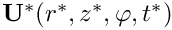, with stress tensor
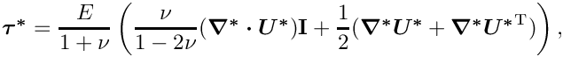
where  and
and  are the material's Young's modulus and Poisson's ratio, respectively.
are the material's Young's modulus and Poisson's ratio, respectively.
As before, we assume a time-harmonic solution with frequency  so that 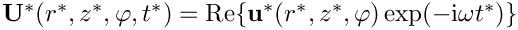. We non-dimensionalise the displacements on
so that 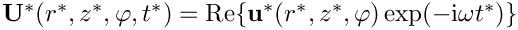. We non-dimensionalise the displacements on  and the stress on Young's modulus, , so that
and the stress on Young's modulus, , so that  and 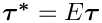. The deformation of the elastic coating is then governed by the time-harmonic Navier-Lame equations
and 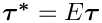. The deformation of the elastic coating is then governed by the time-harmonic Navier-Lame equations
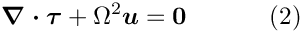
where
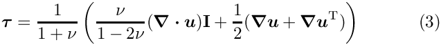
is the non-dimensional stress tensor. The (square of the) non-dimensional wavenumber
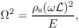
where 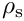 is the solid density, represents the ratio of the typical inertial solid pressure induced by the wall oscillation to the stiffness of the elastic coating. We note that for a ‘light’ coating we have 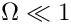.
We then decompose  into its Fourier components by writing
into its Fourier components by writing
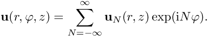
This decomposition allows us to remove the 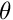-dependence from the equations by writing 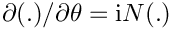. Since the governing equations are linear, we can solve for each Fourier component separately and specify the Fourier wavenumber  as a parameter.
as a parameter.
Boundary conditions
The inner surface of the elastic coating, 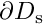, is subject to the prescribed displacement imposed by the oscillating cylinder. For instance, if the inner cylinder performs spherically symmetric oscillations of non-dimensional amplitude  , we have
, we have
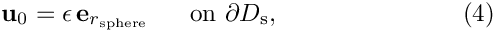
where
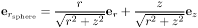
is the unit vector in the (spherically!) radial direction, while the other Fourier components remain zero, 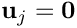 for 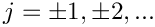 The fluid-loaded surface of the elastic coating,  , is subject to the fluid pressure. The non-dimensional traction exerted by the fluid onto the solid (on the solid stress scale) is therefore given by
, is subject to the fluid pressure. The non-dimensional traction exerted by the fluid onto the solid (on the solid stress scale) is therefore given by
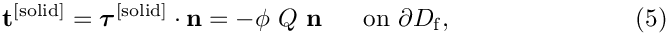
where the 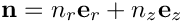 is the outer unit normal on the solid boundary  and
and
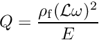
is the final non-dimensional parameter in the problem. It represents the ratio of the typical inertial fluid pressure induced by the wall oscillation to the stiffness of the elastic coating. The parameter  therefore provides a measure of the strength of the fluid-structure interaction (FSI) in the sense that for
therefore provides a measure of the strength of the fluid-structure interaction (FSI) in the sense that for  the elastic coating does not ‘feel’ the presence of the fluid.
the elastic coating does not ‘feel’ the presence of the fluid.
The fluid is forced by the normal displacement of the solid. Imposing the non-penetration condition 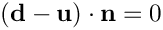 on yields a Neumann condition for the displacement potential,
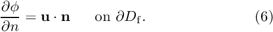
Finally, the displacement potential for the fluid must satisfy the Sommerfeld radiation condition
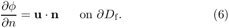
where 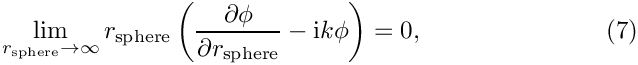 is the (spherical) radius. The Sommerfeld radiation condition ensures that the oscillating sphere does not generate any incoming waves.
Equations (5), (6) and (7) apply for each Fourier component of the solution.
Implementation
The implementation of the coupled problem follows the usual procedure for multi-domain problems in oomph-lib. We discretise the constituent single-physics problems using the existing single-physics elements, here oomph-lib's
and
for the discretisation of the PDEs (1) and (2), respectively. The displacement boundary condition (4) on the inner surface of the elastic coating is imposed as usual by pinning the relevant degrees of freedom, exactly as in a single-physics solid mechanics problem. Similarly, the Sommerfeld radiation condition (7) on the outer boundary of the fluid domain can be imposed by any of the methods available for the solution of the single-physics Helmholtz equation, such as a Dirichlet-to-Neumann mapping.
The boundary conditions (5) and (6) at the fluid-solid interface are traction boundary conditions for the solid, and Neumann boundary conditions for the Helmholtz equation, respectively. In a single-physics problem we would impose such boundary conditions by attaching suitable FaceElements to the appropriate boundaries of the "bulk" elements, as shown in the sketch below: TimeHarmonicFourierDecomposedLinearElasticityTractionElement could be used to impose a (given) traction, 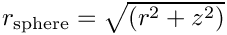, onto the solid; FourierDecomposedHelmholtzFluxElements could be used to impose a (given) normal derivative,  , on the displacement potential. Both and 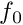 would usually be specified in a user-defined namespace and accessed via function pointers as indicated in the right half of the sketch.
, on the displacement potential. Both and 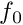 would usually be specified in a user-defined namespace and accessed via function pointers as indicated in the right half of the sketch.
In the coupled problem, illustrated in the left half of the next sketch, the traction acting on the solid becomes a function of the displacement potential via the boundary condition (5), while the normal derivative of the displacement potential is given in terms of the solid displacement via equation (6). Note that corresponding points on the FSI boundary  are identified by matching values of the boundary coordinate
are identified by matching values of the boundary coordinate  which is assumed to be consistent between the two domains.
which is assumed to be consistent between the two domains.
The implementation of this interaction in the discretised problem is illustrated in the right half of the sketch: We replace the single-physics FourierDecomposedHelmholtzFluxElements by FourierDecomposedHelmholtzFluxFromNormalDisplacementBCElements, and the TimeHarmonicFourierDecomposedLinearElasticityTractionElements by FourierDecomposedTimeHarmonicLinElastLoadedByHelmholtzPressureBCElements. (Yes, we like to be verbose...). Both of these FaceElements are derived from the ElementWithExternalElement base class and can therefore store a pointer to an "external" element that provides the information required to impose the appropriate boundary condition. Thus, the FourierDecomposedHelmholtzFluxFromNormalDisplacementBCElements store pointers to the "adjacent" time-harmonic linear elasticity elements (from which they obtain the boundary displacement required for the imposition of (6)), while the FourierDecomposedTimeHarmonicLinElastLoadedByHelmholtzPressureBCElements store pointers to the "adjacent" Helmholtz elements that provide the value of the displacement potential required for the evaluation of (5).

The identification of the "adjacent" bulk elements can be performed using the Multi_domain_functions::setup_bulk_elements_adjacent_to_face_mesh(...) helper function. We note that, as suggested by the sketch above, this function does not require to the two adjacent meshes to have a consistent discretisation – the identification of adjacent elements is based entirely on the (assumed to be consistent) boundary coordinate in the two meshes. We refer to another tutorial for a discussion of how to set up (or change) the parametrisation of mesh boundaries by boundary coordinates.
Results
The animation below shows the deformation of the elastic coating if a non-spherically symmetric displacement
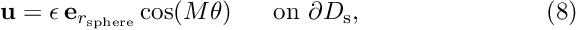
(for  ) where is the zenith angle, is imposed on the inner boundary of the coating 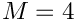.
) where is the zenith angle, is imposed on the inner boundary of the coating 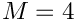.
Here is a plot of the corresponding pressure field:

Finally, we provide some validation of the computational results by comparing the non-dimensional time-average radiated power
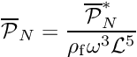
(see Appendix: The time-averaged radiated power for details) against the analytical solution for spherically symmetric forcing ( 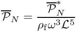) for the parameter values 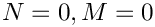, 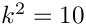, 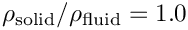 and a non-dimensional coating thickness of


The numerical solution
The global namespace
As usual we define the problem parameters in a namespace. (Recall that we allow the constitutive parameters to be complex-valued.)
We wish to perform parameter studies in which we vary the FSI parameter . To make this physically meaningful, we interpret as a measure of the stiffness of the elastic coating (so that an increase in corresponds to a reduction in the layer's elastic modulus ). In that case, the frequency parameter in the time-harmonic linear elasticity equations becomes a dependent parameter and is given in terms of the density ratio and by . We therefore provide a helper function to update the dependent parameter following any change in the independent parameters.
We force the system by imposing a prescribed displacement on the inner surface of the elastic coating and allow this to vary in the "zenith"-direction with wavenumber :
Finally, we specify the output directory and a multiplier for the number of elements in the meshes to aid mesh convergence studies.
The driver code
The driver code is very straightforward. We parse the command line to determine the parameters for the parameter study and build the problem object, using nine-noded quadrilateral elements for the solution of the time-harmonic elasticity and Helmholtz equations.
We then solve the problem for various values of , updating the dependent variables after every increment.
The problem class
The Problem class is templated by the types of the "bulk" elements used to discretise the Fourier-decomposed time-harmonic linear elasticity and Helmholtz equations, respectively. It contains the usual member functions to attach FaceElements to the bulk meshes in order to apply the various Neumann boundary conditions. We note that the costly recomputation of the integral in the Dirichlet-to-Neumann mapping before the Newton convergence check (implemented in actions_before_newton_convergence_check()) can be avoided by declaring the problem to be linear; see the discussion in the Helmholtz tutorial and Comments.
The private member data includes storage for the various meshes and objects that are used for outputting the results.
The problem constructor
We start by building the meshes for the elasticity and Helmholtz equations. Both domains are half annular regions, so the annular mesh (which is built from a rectangular QuadMesh) is not periodic but only occupies 180 degrees. The mesh also needs to be rotated by 90 degrees to align its ends with the axis:
The solid mesh occupies the region between and where  is the thickness of the elastic coating:
is the thickness of the elastic coating:
The Helmholtz mesh occupies the region between  and
and  where
where  is the outer radius of the computational domain where we will apply the Sommerfeld radiation condition. Note that the two meshes are not matching – both meshes have 3 element layers in the radial direction but 10 and 11 in the azimuthal direction, respectively. This is done mainly to illustrate our claim that the multi-domain setup functions can operate with non-matching meshes.
is the outer radius of the computational domain where we will apply the Sommerfeld radiation condition. Note that the two meshes are not matching – both meshes have 3 element layers in the radial direction but 10 and 11 in the azimuthal direction, respectively. This is done mainly to illustrate our claim that the multi-domain setup functions can operate with non-matching meshes.
Next we create the mesh that will store the FaceElements that will apply the Sommerfeld radiation condition, using the specified number of Fourier terms in the Dirichlet-to-Neumann mapping; see the Helmholtz tutorial for details.
Next we pass the problem parameters to the bulk elements. The elasticity elements require a pointer to Poisson's ratio, , the azimuthal (Fourier) wavenumber , and the frequency parameter  :
:
The Helmholtz elements need a pointer to the (square of the) wavenumber, and the azimuthal (Fourier) wavenumber :
It is always a good idea to check the enumeration of the mesh boundaries to facilitate the application of boundary conditions:
Next we create the meshes containing the various FaceElements used to apply to the FSI traction boundary condition (5), the FSI flux boundary condition (6) for the Helmholtz equation, and the Sommerfeld radiation condition (7), respectively, using helper functions discussed below.
We add the various sub-meshes to the problem and build the global mesh
The solid displacements are prescribed on the inner boundary (boundary 0) of the solid mesh so we pin all six values (representing the real and imaginary parts of the displacements in the and directions, respectively) and assign the boundary values using the function Global_Parameters::solid_boundary_displacement(...). (The enumeration of the unknowns in the Fourier-decomposed equations time-harmonic linear elasticity is discussed in another tutorial.)
The radial and azimuthal displacements have to vanish on the symmetry boundary (boundaries 1 and 3):
Finally, we set up the fluid-structure interaction, assign the equation numbers and open a trace file to record the radiated power as a function of the FSI parameter .
Creating the FSI traction elements (and the FSI flux and DtN elements)
The function create_fsi_traction_elements() creates the FaceElements required to apply the FSI traction boundary condition (5) on the outer boundary (boundary 2) of the solid mesh:
To function properly, the elements need to know the number of the bulk mesh boundary they are attached to (this allows them to determine the boundary coordinate required to set up the fluid-structure interaction; see Implementation ), and the FSI parameter .
[Note: We omit the listings of the functions create_helmholtz_fsi_flux_elements() and create_helmholtz_DtN_elements() which create the FaceElements required to apply the FSI flux boundary condition (6) on the inner boundary (boundary 0), and the Sommerfeld radiation condition (7) on the outer boundary (boundary 2) of the Helmholtz mesh because they are very similar. Feel free to inspect the
source code.]
Setting up the fluid-structure interaction
The setup of the fluid-structure interaction requires the identification of the "bulk" Helmholtz elements that are adjacent to (the Gauss points of) the FaceElements that impose the FSI traction boundary condition (5), in terms of the displacement potential computed by these "bulk" elements. This can be done using the helper function Multi_domain_functions::setup_bulk_elements_adjacent_to_face_mesh(...) which is templated by the type of the "bulk" element and its spatial dimension, and takes as arguments:
- a pointer to the
Problem, - the boundary ID of the FSI boundary in the "bulk" mesh,
- a pointer to that mesh,
- a pointer to the mesh of
FaceElements.
Nearly a one-liner (if you ignore the optional output of the boundary coordinate which allows us to check that the FSI boundaries of the fluid and solid domains have been parametrised consistently).
Exactly the same method can be used for the identification of the "bulk" elasticity elements that are adjacent to (the Gauss points of) the FaceElements that impose the FSI flux boundary condition (6), using the displacement computed by these "bulk" elements:
Post-processing
The post-processing function doc_solution(...) computes and outputs the total radiated power, and plots the computed solutions (real and imaginary parts) for all fields.
Comments and Exercises
Comments
- The application of the Sommerfeld radiation condition via a Dirichlet-to-Neumann mapping is discussed in detail in another tutorial. We explain there that, because the integral depends on the solution, it must be recomputed whenever the unknowns are updated during the Newton iteration. This is best done by adding a call to
FourierDecomposedHelmholtzDtNMesh::setup_gamma()toProblem::actions_before_newton_convergence_check()as done in the driver code listed above. However, if Helmholtz's equation is solved in isolation (or within a coupled, but linear problem as in the present case ), the Newton method is guaranteed to converge in one iteration. In such cases the unnecessary recomputation of after the one-and-only Newton iteration can be suppressed by settingProblem::Problem_is_nonlineartofalse– in that case,oomph-lib'sNewton solver skips the convergence check in the Newton iteration and simply accepts the solution obtained after one linear solve. - You may have noticed that, unlike the tutorial for the cartesian counterpart of the model problem considered here, we neither demonstrate how to apply the Sommerfeld radiation condition by approximate/absorbing boundary conditions (ABCs), nor do we demonstrate the use of spatial adaptivity. This is because the relevant elements have not (yet!) been written (Any volunteers?). If you wish to enable spatial adaptivity we suggest using an unstructured adaptive mesh, using the methodology demonstrated in another tutorial.
Exercises
- As shown in the Appendix: The time-averaged radiated power, the time-averaged radiated power depends on the derivatives of the displacement potential . This implies that the value for computed from the finite-element solution for is not as accurate as the displacement potential itself. Computing to a certain tolerance (e.g. to "graphical accuracy" as in the plot shown above) therefore tends to require meshes that are much finer than would be required if we were only interested in itself.
Investigate the accuracy of the computational predictions for by:- increasing the spatial resolution e.g. by using the command line flag
–el_multiplierwhich controls the number of elements in the mesh. - reducing the outer radius of the computational domain, using the command line flag
–outer_radius, say. - varying the element type, from the bi-linear
QFourierDecomposedHelmholtzElement<2>to the bi-cubicQFourierDecomposedHelmholtzElement<4>, say.
- increasing the spatial resolution e.g. by using the command line flag
Appendix: The time-averaged radiated power
This appendix provides a brief summary of the computation (and non-dimensionalisation) of the time-averaged power radiated across the closed surface (with outer unit normal ) of a fluid volume  . In dimensional terms, is given by
. In dimensional terms, is given by
where the intensity
depends on the fluid velocity and the pressure . The time average is taken over the period of the oscillation, Using our time-periodic ansatz for the fluid displacement potential, , the intensity can be re-written as
Next we express the surface integral in (9) in cylindrical polar coordinates. Assuming the (axisymmetric) boundary of the fluid domain is parametrised (in the plane) as and , where is some curve parameter (e.g. the arclength), we have
The power associated with the th azimuthal Fourier mode, , is then given by
Non-dimensionalising all lengths on and the displacement potential on then yields the following expression for the non-dimensional time-averaged radiated power
![\[ \overline{\cal P }_N = \frac{\overline{\cal P }^*_N}{\rho_{\rm f} \omega^3 {\cal L}^5} = \pi \int \bigg( Im \{\frac{\partial \phi_N}{\partial n} \} Re\{\phi_N \} - Re \{\frac{\partial \phi_N}{\partial n} \} Im\{\phi_N \} \bigg) \sqrt{ \left(\frac{\partial R}{\partial s}\right)^2 + \left(\frac{\partial Z}{\partial s}\right)^2 } R(s) \ ds. \]](form_113.png)
This quantity is computed by oomph-lib on an element-by-element basis, using the function FourierDecomposedHelmholtzBCElementBase::global_power_contribution(...).
The computation is most easily validated by comparing against analytical results in which the displacement potential is expressed in spherical polar coordinates where and is the zenith angle which varies from at the "North pole" to at the "South pole". If we evaluate the surface integral in (9) on a spherical surface of dimensional radius , the dimensional time-averaged radiated power is
The power associated with th azimuthal Fourier mode, , is then given by
where . The non-dimensional time-averaged power, evaluated on a sphere of non-dimensional radius is then given by
where .
The derivation of the analytical expression for against which we validated our computational results were performed with maple, using the script demo_drivers/interaction/fourier_decomposed_acoustic_fsi/exact.map .
Source files for this tutorial
- The source files for this tutorial are located in the directory:
demo_drivers/interaction/fourier_decomposed_acoustic_fsi/ - The driver code is:
demo_drivers/interaction/fourier_decomposed_acoustic_fsi/fourier_decomposed_acoustic_fsi.cc
PDF file
A pdf version of this document is available.